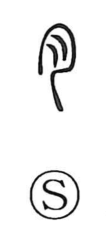

肉

Kun: shishi | On: niku
meat ・ flesh ・ body ・ skin
Explanation
肉 pictures a cut piece of flesh. The enclosing outline marks the portion, and the strokes within indicate its inner substance. The early word refers to a substantial piece of meat.
From flesh come the body, skin, and the condition of being fleshy or gaining weight. Its sound family is close to words for softness and yielding: flesh is soft in contrast with the bones that support it.
As a component, 肉 often takes a form resembling 月. In such characters it can concern a body part or bodily condition. Its history remains that of flesh, even where the compact modern shape looks like the separate character for the moon.